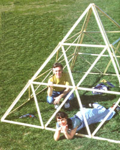
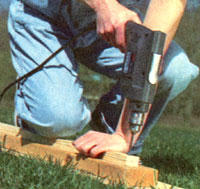
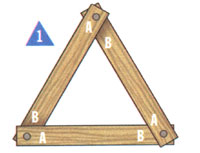
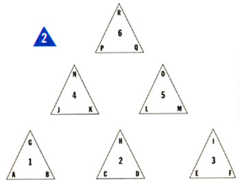
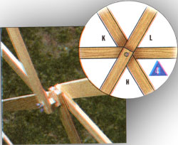
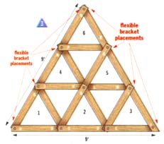
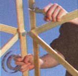
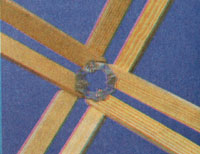

BUILDING NEW SPACES
Old and new are combination in a sturdy, lightweight, versatile addition to the house and garden
In 1972, Buckminster Fuller (then a respectable 78 years old) made his first appearance inMother Earth News. Never the most self-effacing of men, he began by detailing a career as, in his words, "...an architect, planner, engineer, inventor, author, cartographer, educator, mathematician, scientist, philosopher, poet." It's tempting to laugh upon hearing such a statement, but a few turns of the pages reveal that is precisely what he accomplished in his long and wonderful life. In an age when the term "Renaissance Man" has been overused to the point of meaninglessness, his breadth of experience and influence fit precisely into that mold. An encyclopedia would lack the space to detail his inventiveness (sometimes brilliant, often cosmically ridiculous), but dozens of his ideas live and breathe still today. Buckminster's three-wheeled "Dymaxion Car;" which could turn 180° in its own length and transport ten people at 120 mph using a standard production engine, was light years ahead of anything built before and continues to inspire auto designers to this day. Architecturally, his legacy is the discovery (or rediscovery) of the triangular support, a system that was capable of enclosing more interior space with fewer materials than any other frame. He called his revolutionary shelter a "Geodesic Dome," and it couldn't have come at a worse time.
America in the 1940s and '50s was not only uninterested in economizing on materials and resources, it felt a manifest destiny to churn through as many resources as possible. The marketability of a home that was illuminated and heated by sun alone during daylight hours deviated completely from the saltbox shape of the average design, and a home intended to be frugal was almost nonexistent. Future generations, however, have proven that triangular supports and the structures they form might just outlive the "traditional home," practically as well as conceptually. Contemporary uses of the triangular-interdependent system include the Biosphere 11, which has a stepped pyramid as one of its primary shapes, the pyramid entrance to the Pompidou Art Center in Paris, the Geodesic "golf ball" Epcot Center at Disney World, and the Superdome in Dallas. We bastardized Buckminster's dome into a pyramid for two reasons. First, because a pyramid can be taken down and stored or transported slightly more easily than a dome of similar proportions, and second... because we thought it was fun. The finished structure was modeled after the Egyptian pyramid at Giza, which also has a pitch of approximately 55°. Read enough New Age literature on the subject, and you'll soon discover that time spent in a pyramid has been attributed with benefits as diverse as increased intelligence, inner peace, and hair growth (sadly, after careful examination, we cannot subscribe to the latter contention). Although "fun" wasn't a goal Buckminster referred to very often, we hope he would have approved.
Whether you live in Phoenix or Nome, 100-square feet of enclosed, environmentally controlled space for plant germination is a godsend. We designed our greenhouse to be not only lightweight, capable of being assembled and disassembled in 20 minutes, storable and durable, but also just as happy covered with plexiglass or flexible-weather sheeting as it is open to the wind as a trellis. The individual sides of the trellis pyramid can be used either lying fiat or pitched on the side of a building, where its wining plants can offer shade. Climbing plants will find the trellis a home as will plants housed within, which will thrive under the shade of the vines.
To begin building MOTHER'S Pyramid Trellis, start by cutting your pine strips into 3-foot lengths. A total of 225 linear feet should give you 75 pieces-72 for construction and three extra. Although this cutting can be done with a hand saw and a miter box, you might want to have this done at a lumber yard if you don't have access to a table or chop saw. Whichever method you choose, take care to keep the cuts consistent.
The next step is to drill holes at equal points at both ends of each length. A simple jig is made by cutting one of the extra strips in half. On the end of one of those pieces, make a mark equal to the width of the strip using either a ruler or the other half as your guide. Locate the drill point by drawing equal diagonal lines in the resulting square (see diagram). Drill a 90° hole through the piece. Now, placing a new length on a 2" piece of 2x4 scrap wood, align the jig flush on three sides. Holding the piece steady with one hand, drill through the bottom length. Repeat this process on both ends of all 72 pieces.
Having completed this, you can begin assembling the four pyramid sides. Lay out six overlapping triangles for each side in the appropriate manner (see diagrams 1,2,3). Line up your drill points and insert the screws through the holes from underneath with washers at both ends. Fasten with wing nuts. Use 1 1/4" bolts at the three outer corners and 3" for the central hub. All other junctures take 2" screws. Until you're ready to erect the Pyramid on site, fully tighten only the wing nuts of the bottom center triangles.
Because the trellis is composed of staggered triangular units, the meeting points vary according to the number of pieces. To accommodate the difference in width and tension on adjoining sides, flexible fasteners are used. These are fashioned by cutting 16 2 1/2" pieces of hanger strip. Holding each piece at the center hole with a pair of pliers, bend to an approximately 100° angle. These homemade brackets will provide the necessary support to connect the pyramid sides.
It is always a good idea to weatherproof wood exposed to the elements. This weatherproofing will be much easier to do while the pyramid is unassembled, so after the cutting is finished, use an exterior stain, paint, or sealer to protect the wood.
At this stage, you will need a volunteer with 30 minutes worth of patience (or one who owes you a favor) to help you put up your Pyramid. Before you actually begin, remember to keep the top points of all four sides the same (point R on diagram 3). Now, at the outside junctures of two pyramid sides, take off the wing nuts and place a flexible fastener with a washer on top. Replace the wing nuts and tighten (see diagram 4). Have your willing volunteer, who has removed the wing nuts on an adjoining side in the meantime, hold it in place while you first connect the center two junctures and then the bottom. Repeat with the next two sides, adjusting the angle of the fasteners as needed. Join the tops (points R) last and then tighten all your wing nuts throughout. You will now be standing inside your very own Pyramid Trellis. Can you fit through a 3-foot triangle? Let's hope so.
Variable-speed hand drill
13/16 drill bit
Chop saw, table saw, or miter Box and hand saw
1 1/4" flathead screwdriver 75 3'L x 1 1/2"W x 1/2"D pine strips (72 for corn struction plus three extra)
1 2x4x2 piece of scrap wood
3" x 3/16 machine, screws/stove bolts
24 2" x 3/16 machine screws/stove bolts
12 1 1/2" x3/16 machine screws/stove bolts Washers and wing nuts to fit all
1 box 3/4" perforated hanger strip Pliers, Tin snips
|
 PHOTOS BY ROBIN THOMAS |
 |
 |
|
 |
 |
 |
|
 |
 |
|